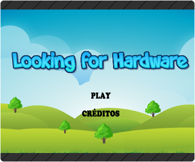
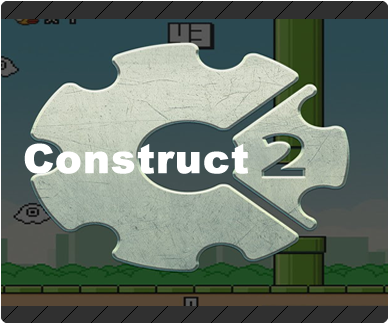

|  |
Looking For Hardware
O software será um jogo ao qual será desenvolvido pela Construct 2 e possuirá uma visão 2D (Visão pelo lado). Para que seja possível desenvolver o jogo, estamos buscando nos aprofundar mais no software Construct 2 através de vídeo aulas do youtube, a fim de conseguir desenvolver o jogo com qualidade e tentando evitar o máximo de bugs possíveis. O software criado terá o objetivo de ensinar informática básica de modo que o usuário possa se divertir e se descontrair.
|
|
|  |
Construct 2
A Construct 2 é um software para a criação de jogos digitais multiplataforma em 2D baseados em HTML 5, criada pela empresa Scirra. Ela pode produzir games para smartphones, tablets, computadores, navegadores e também para o console Wii U.
O software foi desenvolvido para usuários que não tem conhecimento sobre a área de linguagem de programação, entretanto, para o desenvolvimento do aplicativo o indivíduo deve possuir um bom raciocínio, usando assim a lógica de programação.
|
|
|